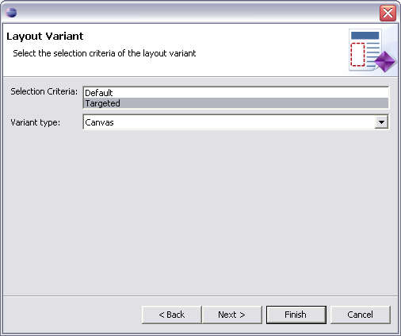
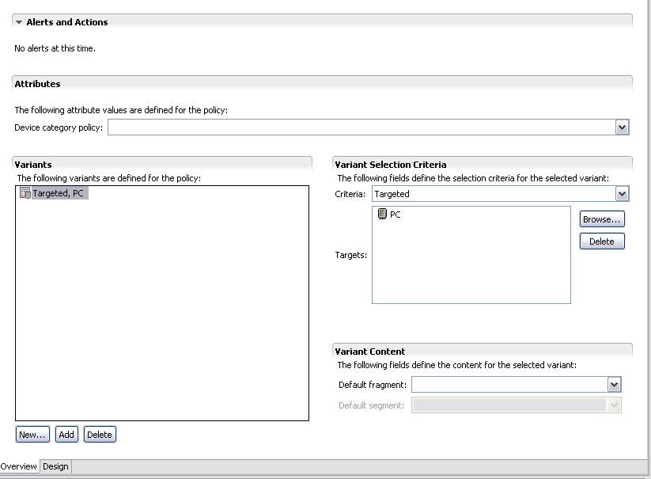
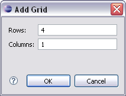
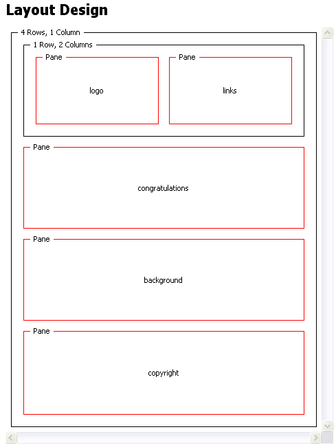
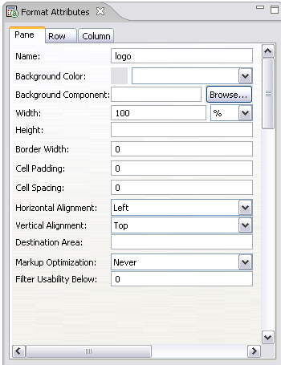

Creating a layout
Next we use a layout to specify the physical position of elements on pages. To display
content on a range of devices you need to define variants that are suitable for different
device characteristics.
This task is very like creating an image policy. This time you will learn a quick way to
choose a wizard.
Adding a layout 
- Right click on the welcome/WebContent/mcs-policies folder, and choose
New | Layout from the context menu
- Call the new layout 'welcome' and then click the Next button. The
wizard will automatically add the .mlyt layout file extension.
Choosing a device
- Choose 'Targeted' in the Selection Criteria box, select 'Canvas' as
the Variant type and click the Next button

- Type 'PC' in the top box to filter the list of available devices
- From the filtered list of devices choose 'PC', by checking the box next to it, and click
the Finish button. The new layout file called 'welcome.mlyt' is displayed
in the welcome/WebContent/mcs-policies folder and is opened in the Layout
editor.
- Now click the New button under the variants section and add a layout
variant for the Smartphone
- The editor has two pages, an Overview page listing the layout variants and their general
attributes, and a Design page where you can develop your layout.

Using grids
When designing a layout you start with a grid structure that defines the skeleton of the
page. Next, you add elements that hold targeted content. Grids give a device layout a basic
structure for your content. You can nest grids inside one another, and also wrap one grid
element in another.
- Pick the 'Targeted, PC' variant in the list of variants and switch to the Design page by
clicking on the tab at the bottom of the window, to display a single empty layout cell
- Right click in the empty cell area and choose Add |
Grid | N by M to open the Add Grid dialog

- Enter values for 4 rows and 1 column and click OK. There are now empty
cells for each row.

- In the top row add 2 columns to hold the logo and links
- Your final grid structure should look like the one below

Adding a format
MCS displays content in individual panes, which need to have a unique names within the
layout.
- In the top row of the grid, right click on the left-hand cell, and choose
Add | Pane | Pane. The added pane is
highlighted in red. If it is not already visible, MCS displays the Format Attributes view
- With this pane selected in the page, set the Name control in the
Format Attributes view to 'logo'. On the page the name is displayed.
- Continue to add panes and attribute values for the remaining cells in the grid. The values
are summarized below.

Mobile layout
The Smartphone layout is similar, using a 5x1 grid, with the links section immediately before
the copyright notice. Create it as an exercise, but make the layout more flexible by targeting
it at all mobiles on the device tree.
Checklist
Set the following format attribute values for the PC layout.
| Name | Width | Border Width | Cell Padding | Cell Spacing | Horizontal Alignment | Vertical Alignment | Markup Optimization | Filter Usability Below |
|---|
| logo | 100% | 0 | 0 | 0 | Left | Top | Never | 0 |
|---|
| congratulations | | |
|---|
| background |
|---|
| links | Left | Center |
|---|
| copyright | Left | |
|---|
These are the format attribute values for the mobile page layout.
| Name | Width | Border Width | Cell Padding | Cell Spacing | Horizontal Alignment | Vertical Alignment | Markup Optimization | Filter Usability Below |
|---|
| logo | 100% | 0 | 0 | 0 | | | Never | 0 |
|---|
| congratulations |
|---|
| background | Bottom |
|---|
| links | |
|---|
| copyright | Left |
|---|